Integrations — one proxy, every SDK
Start distil proxy once and point any SDK's baseURL at it. No library changes, no monkey-patching — compression happens at the network layer.

How it works
The proxy (distil proxy, default http://127.0.0.1:8788) is a local HTTP server. It intercepts the three compressible paths across all major LLM APIs:
/v1/messages— Anthropic Messages API/v1/chat/completions— OpenAI Chat Completions (also used by LiteLLM, LangChain, etc.)/v1/responses— OpenAI Responses API/v1beta/models/{model}:generateContentand:streamGenerateContent— Google Gemini REST API (also the/v1/…host variants)
All other paths and HTTP verbs pass through unchanged. Your API key travels in the request headers exactly as normal — the proxy never logs or stores it.
SDK integration matrix
| SDK / Framework | Language | Setting | Value | Example |
|---|---|---|---|---|
| Anthropic Python SDK | Python | base_url= |
http://127.0.0.1:8788 |
python_anthropic.py |
Anthropic TypeScript SDK (@anthropic-ai/sdk) |
TypeScript | baseURL in new Anthropic({…}) |
http://127.0.0.1:8788 |
js_anthropic.ts |
Claude Agent SDK / claude -p (headless) |
Python / TS / CLI | distil wrap -- <cmd> or ANTHROPIC_BASE_URL |
http://127.0.0.1:8788 |
python_claude_agent_sdk.py |
| OpenAI Python SDK | Python | base_url= |
http://127.0.0.1:8788/v1 |
python_openai.py |
| LiteLLM | Python | api_base= |
http://127.0.0.1:8788 |
python_litellm.py |
| Cursor (agent/chat panel only) | IDE | Settings → Override OpenAI Base URL | http://127.0.0.1:8788/v1 |
below |
| CrewAI | Python | base_url= in LLM({…}) |
http://127.0.0.1:8788/v1 |
below |
| Agno | Python | base_url= in OpenAILike({…}) |
http://127.0.0.1:8788/v1 |
below |
| Strands Agents | Python | client_args={"base_url": …} in OpenAIModel({…}) |
http://127.0.0.1:8788/v1 |
below |
Vercel AI SDK (@ai-sdk/anthropic) |
TypeScript | baseURL in createAnthropic({…}) |
http://127.0.0.1:8788 |
js_vercel_ai_sdk.ts |
LangChain.js (@langchain/anthropic) |
TypeScript | anthropicApiUrl in ChatAnthropic({…}) |
http://127.0.0.1:8788 |
js_langchain.ts |
Google Gemini REST (google-generativeai) |
Python / curl | api_endpoint in client_options |
http://127.0.0.1:8788 (upstream: https://generativelanguage.googleapis.com) |
python_gemini.py |
Snippets
Anthropic Python SDK
import anthropic client = anthropic.Anthropic( api_key="sk-ant-…", base_url="http://127.0.0.1:8788", ) response = client.messages.create( model="claude-opus-4-5", max_tokens=1024, messages=[{"role": "user", "content": "Hello!"}], )
OpenAI Python SDK
import openai client = openai.OpenAI( api_key="sk-…", base_url="http://127.0.0.1:8788/v1", ) response = client.chat.completions.create( model="gpt-4o", messages=[{"role": "user", "content": "Hello!"}], )
LiteLLM
import litellm response = litellm.completion( model="claude-opus-4-5", api_base="http://127.0.0.1:8788", api_key="sk-ant-…", messages=[{"role": "user", "content": "Hello!"}], )
Running the standalone LiteLLM Proxy instead?
Same mechanism, one YAML field: point each model's api_base at distil proxy, and every request routed through the LiteLLM Proxy is compressed transparently.
# Terminal 1 — distil sits in front of the real upstream distil proxy --port 8788 --upstream https://api.anthropic.com # config.yaml — Terminal 2 model_list: - model_name: claude-opus-4-5 litellm_params: model: anthropic/claude-opus-4-5 api_base: http://127.0.0.1:8788 api_key: os.environ/ANTHROPIC_API_KEY # Terminal 2 — start the LiteLLM Proxy against that config litellm --config config.yaml
Cursor
Settings → enable Override OpenAI Base URL, set it to the proxy, and add your model. The key field is labelled "OpenAI API Key" but is sent to whatever endpoint you configure.
CrewAI
CrewAI's LLM takes base_url directly. Point it at the proxy and prefix the model with its provider.
$ pip install crewai $ distil proxy --port 8788 --upstream https://api.openai.com & import os from crewai import Agent, LLM llm = LLM( model="openai/gpt-4o", # provider prefix is required base_url="http://127.0.0.1:8788/v1", # ← the only change; end at /v1 api_key=os.environ["OPENAI_API_KEY"], ) agent = Agent(llm=llm, ...)
planning_llm, function_calling_llm and any manager LLM separately — leave those unset and those calls go straight to the provider, bypassing the proxy entirely. You would see partial savings and no error. Set base_url to the /v1 root, not /v1/chat/completions; LiteLLM appends the route itself.
Agno
Agno's OpenAILike is the class it recommends for any OpenAI-compatible endpoint — it takes the same parameters as OpenAIChat and relaxes the OpenAI-only assumptions. Point base_url at the proxy and every model call the agent makes is compressed on the way out.
$ pip install agno openai $ distil proxy --port 8788 --upstream https://api.openai.com & import os from agno.agent import Agent from agno.models.openai.like import OpenAILike agent = Agent( model=OpenAILike( id="gpt-4o", api_key=os.environ["OPENAI_API_KEY"], base_url="http://127.0.0.1:8788/v1", # ← the only change ) ) agent.print_response("...")
Strands Agents
Strands' OpenAIModel forwards client_args straight to the underlying openai client, so base_url goes there. Nothing else in the agent changes.
$ pip install strands-agents $ distil proxy --port 8788 --upstream https://api.openai.com & import os from strands import Agent from strands.models.openai import OpenAIModel model = OpenAIModel( client_args={ "api_key": os.environ["OPENAI_API_KEY"], "base_url": "http://127.0.0.1:8788/v1", # ← the only change }, model_id="gpt-4o", ) agent = Agent(model=model)
distil-agno or distil-strands package. Both of these are two-line base_url redirects, and so is every other framework that speaks an OpenAI- or Anthropic-shaped API. distil is a proxy, so a framework is supported the moment it lets you set an endpoint — there is nothing to version, nothing to break on the framework's next release, and no per-framework code to maintain. The in-process hooks further down exist only for the cases where you want compression without running a proxy at all.
Vercel AI SDK (TypeScript)
import { createAnthropic } from "@ai-sdk/anthropic"; import { generateText } from "ai"; const anthropic = createAnthropic({ baseURL: "http://127.0.0.1:8788", apiKey: process.env.ANTHROPIC_API_KEY, }); const { text } = await generateText({ model: anthropic("claude-opus-4-5"), prompt: "Hello!", });
LangChain.js (TypeScript)
import { ChatAnthropic } from "@langchain/anthropic"; const model = new ChatAnthropic({ model: "claude-opus-4-5", apiKey: process.env.ANTHROPIC_API_KEY, anthropicApiUrl: "http://127.0.0.1:8788", // older versions: clientOptions: { baseURL: "http://127.0.0.1:8788" } }); const response = await model.invoke([ ["human", "Hello!"], ]);
Google Gemini REST
# Start proxy pointing at the Gemini API
distil proxy --port 8788 --upstream https://generativelanguage.googleapis.com
import google.generativeai as genai genai.configure( transport="rest", client_options={"api_endpoint": "http://127.0.0.1:8788"}, ) model = genai.GenerativeModel("gemini-1.5-pro") response = model.generate_content("Hello!")
See examples/python_gemini.py for a full runnable example including tool-use turns. The proxy transparently compresses text parts (Tier-0 lossless) and functionResponse payloads (Tier-1 reversible digest). functionCall, inlineData, fileData, model-authored text, and systemInstruction are always passed through unchanged.
Claude Code plugin
The first-class integration: a session-first savings status line plus
slash commands, shipped as a marketplace-format plugin
(plugins/distil).
Wire it in one step with distil setup (or distil onboard), then
route the agent through compression with distil wrap -- claude.
| Command | What it does |
|---|---|
/distil-onboard | Set up distil + a guided, tailored tour |
/distil | Savings report + how to route more traffic through distil |
/distil-stats | Full breakdown — tokens, cost, runs, per-trajectory bars |
/distil-shadow | Live decision-equivalence: did compression preserve the next action? |
/distil-dashboard | HTML savings page — session, lifetime, and decision-equivalence cards |
/distil-doctor | Diagnose the setup — ledger, shadow validation, proxy round-trip, wiring |
/distil-certify | Trajectory-level certificate: bound how many solvable tasks compression may cost |
/distil-badge | Shareable badge of your measured savings |
One pattern in every state: distil · <live> · total ▼<lifetime>.
The live segment aggregates recent activity (last 15 min, all terminals), so it never
flickers between sessions:
| State | You see | Means |
|---|---|---|
| saving | distil · ▼12.0K · 40% smaller · $0.31 · total ▼27.0M · ✓eq 99% | compressing your recent traffic |
| watching | distil · ✓ on · waiting for a large read · total ▼27.0M | on, but no large content yet — savings come from big file/command output |
| idle | distil · ✓ on · total ▼27.0M | set up and on, no recent traffic |
| not routed | distil · off — session not routed · total ▼27.0M | this session goes straight to the provider — start it with distil wrap (or the always-on env) to compress. "on" always means routed, never merely installed. |
▼ = tokens saved · total = lifetime · ✓eq = decision-equivalence
(shown only past 25 shadow samples — a rate over a handful is noise). Sharing the line with
git/cwd/model? Set DISTIL_STATUSLINE=minimal for a two-fact segment:
distil ▼75.0K · 27.0M total.
MCP server
A zero-dependency Model Context Protocol server (stdlib only — no SDK) exposes distil's reversible compression to any MCP client (Claude Desktop, IDEs, agents) over stdio:
claude mcp add distil -- distil mcp # Claude Code — one line, done
Every other client takes the same stdio config — Claude Desktop
(~/Library/Application Support/Claude/claude_desktop_config.json), Cursor
(.cursor/mcp.json), VS Code (.vscode/mcp.json):
{
"mcpServers": {
"distil": { "command": "distil", "args": ["mcp"] }
}
}
No distil install? Run it from PyPI on demand — "command": "uvx", "args":
["--from", "distil-llm", "distil", "mcp"]. Restart the client after editing. To check the
server without a client at all:
echo '{"jsonrpc":"2.0","id":1,"method":"tools/list"}' | distil mcp
| Tool | What it does | Called when |
|---|---|---|
distil_compress(text) | Compact digest + an 8-hex handle; the
original is stored locally (encrypted, 0600) and never returned until asked |
A tool returned something huge and carrying it verbatim is wasteful |
distil_expand(handle) | The exact original bytes — not a summary | The digest lost a detail the agent now needs: a line, a value, a stack frame |
distil_savings() | Cumulative tokens/dollars from the local ledger | Someone asks what distil has saved |
Each tool carries MCP annotations (readOnlyHint, idempotentHint,
openWorldHint: false), so a client knows distil_expand is a safe,
repeatable, offline read instead of inferring it from prose.
This is the recall path, not the savings path. The MCP server does not compress your
agent's traffic — distil wrap does that transparently, with no tool calls. What the
MCP server adds is the other half: any agent, including one you never wrapped, can call
distil_expand on a handle it sees in context and get the original back. Handles
survive restarts and cross processes, and age out after DISTIL_RESTORE_TTL_DAYS
(default 14).
In-process hooks (LiteLLM · LangChain · LangGraph)
Prefer not to run a sidecar? Compress the request in-process — the same reversible compression, no proxy. Every helper lazy-imports (or duck-types) its framework, so distil stays zero-dep.
# LiteLLM — drop-in for litellm.completion from distil.integrations import litellm as distil_litellm resp = distil_litellm.completion(model="claude-opus-4-8", messages=[...], distil_verbatim=True) # optional, Tier-0 only # LangChain — compress a message list before the model call (duck-typed) from distil.integrations.langchain import compress_messages msgs = compress_messages(state["messages"], verbatim=True) # LangGraph — compress graph state right before the model node from distil.integrations.langgraph import pre_model_hook agent = create_react_agent(model, tools, pre_model_hook=pre_model_hook())
Tool/function messages get the reversible Tier-1 digest; human/system messages get
Tier-0 lossless; the model's own words are never rewritten. compress() (LiteLLM),
compress_messages() (LangChain), and pre_model_hook() (LangGraph) are
framework-free and unit-tested. The LangGraph hook returns only the updated message list, so
every other state field is left intact.
Observability headers
The proxy adds up to 9 response headers per compressed response. The first two appear on every compressed request; the rest are conditional:
| Header | Meaning | Condition |
|---|---|---|
x-distil-compressed: 1 |
Compression was applied this turn. | Always (on compressed requests) |
x-distil-tokens-saved: <n> |
Estimated input tokens saved (heuristic tokenizer). | Always (on compressed requests) |
x-distil-expanded: 1 |
A digest was resolved via the transparent expand loop. | When --expand fired |
x-distil-cache-prefix-msgs: <n> |
Leading messages left byte-identical vs the previous turn (the prompt-cache-read region) — the verifiable benefit of a prefix-freeze router, content-free. | With --session-delta |
x-distil-cache-refs: <n> |
Total cache-delta references this turn. | With --session-delta |
x-distil-cache-delta: <n> |
Delta-encoded references this turn. | With --session-delta |
x-distil-cache-tokens-saved: <n> |
Tokens saved by cache-delta encoding. | With --session-delta |
x-distil-output-shaping: light|aggressive |
Output shaping was injected at this level. | When --shape-output fired |
x-distil-shadow: sampled |
This request was sampled for shadow-mode decision-equivalence. | When --shadow rate triggered |
The managed gateway (distil gateway) additionally adds x-distil-tenant: <id> for per-tenant accounting.
Node.js / TypeScript
Distil's universal path is the proxy — it's language-agnostic, so JS/TS stacks need no Distil-specific package. Start the proxy (or wrap your agent) and point your SDK's baseURL at it:
# start the proxy (needs Python 3.11+ — see Install)
distil proxy --port 8788 --upstream https://api.anthropic.com
// then in your Node/TS app — no code change beyond baseURL const client = new Anthropic({ baseURL: "http://localhost:8788" });
Or wrap an existing CLI/agent in one shot: distil wrap -- <your-command> starts the proxy and injects ANTHROPIC_BASE_URL automatically.
Homebrew
brew tap dshakes/tap brew install dshakes/tap/distil distil proxy --port 8788